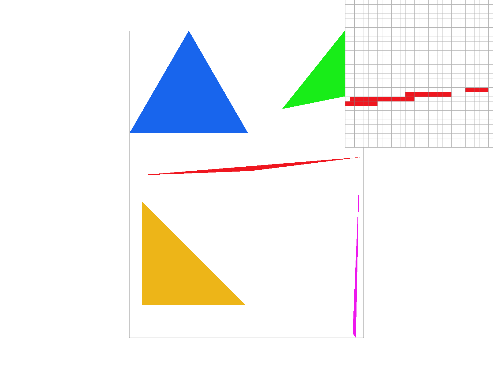
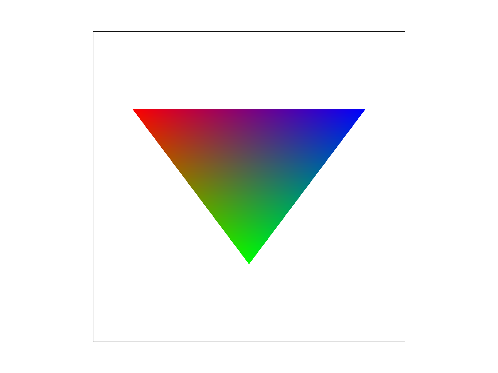

CS 184: Computer Graphics and Imaging, Spring 2023
Project 1: Rasterizer
Parth Mahawar, Shawn Zhao
Overview
In this project, we learned how to rasterize triangles in increasingly complex ways. We started by rasterizing single-color triangles, then using Barycentric coordinates to interpolate the colors inside the triangle, then finally sampling the colors from a texture map. We also learned different antialiasing methods that helped smooth our originally jagged images, such as supersampling, bilinear pixel sampling, and nearest/bilinear level sampling. All in all, it was interesting to see our rasterization process grow more and more complex throughout the project, yet we were able to render increasing detailed images.
Section I: Rasterization
Part 1: Rasterizing single-color triangles
For this task, we are given 3 points p1 = (x0, y0), p2 = (x1, y1), and p3 = (x2, y2), and our goal is to rasterize the triangle with these points as the corners. To do this, we took the minimum x, maximum x, minimum y, and maximum y, to form the bounding box of our relevant points. To avoid rounding the bounding boxes inwards, leading to edges of triangles not filling properly, we applied the floor function to the minimum x and y, and the ceiling function to the maximum x and y.Then, we iterated through each point in this set of relevant points and performed the line test on each of the lines formed by two of the corners. To make sure that our code worked regardless of the winding order of the vertices inputted, we made sure to represent our lines in a cyclic order with respect to the argument vertices (e.g. p2-p1, p3-p2, p1-p3). This ensures that the inside of the triangle would be on the same side of each line (left or right in this 2D example), and thus allows us to check if the result of the 3 line tests of a point are all nonnegative or nonpositive to see if a point is inside a triangle. If the result of the 3 line tests are not all nonnegative or nonpositive, then this point lies on the different side of the line for one line compared to the other two, and therefore we know it is not inside the triangle. We made sure to include 0 as an acceptable result of the line tests in both cases because a result of 0 implies the point is on the edge of the triangle, and samples on the boundaries of triangles were to be drawn.
With all this in place, we performed the 3 line tests on each point in and along the the edges of the bounding box that had x and y coordinates of an integer + 0.5, which represents the center of each pixel, to test if the point was in the triangle. If it was, we fill the pixel with the color the triangle is meant to be. One of our results is shown below:

Our rendered image of basic/test4.svg with the default viewing parameters. This method is naive and still contains aliasing, which we can see with the pixel inspector, as there is a gap of empty pixels between the body of the triangle and its corner.
Part 2: Antialiasing triangles
In our example shown in Part 1, we noticed that there was still some aliasing. One way we can try and mitigate this is through supersampling. In supersampling, instead of sampling the middle of the pixel to determine whether or not to color that pixel, we sample at sampling_rate evenly distributed supersamples within the pixel. Supersampling is useful as a form of antialiasing because sampling a pixel multiple times will give a more accurate judgement of the color it is supposed to take on, as there is a chance that sampling only the center of a pixel will cause it to not be colored if the pixel contains the border of the ideal triangle, but by sampling multiple times, our samples are much less likely to "miss" and should result in much smoother edges.
In our algorithm, we first recalculate the offset for x and y, since our offset is now 1/sqrt(sampling_rate), and now our x and y increments by 2/sqrt(sampling rate). We can extend our algorithm from part 1, where we perform the 3 line tests on each of the supersamples of each of the pixels within the bounding box to determine whether or not the supersample lies within the triangle and the corresponding color needs to be applied. However, in this case, instead of directly coloring the pixel based on the result, we add the corresponding color to a sample buffer at the index that corresponds to the index of the sample if the supersampled were to be flattened, e.g. the first sampling_rate indices of the sample buffer correspond to the samples taken from the first pixel, the second sampling_rate indices of the sample buffer correspond to the samples taken from the second pixel, etc.
After we have completed these line tests for every supersample of each pixel in the bounding box, we go back and fill the pixels with the results of our sampling buffer. For each pixel, we receive the sampling_rate colors stored in the sample buffer that were associated with this pixel, average the colors, and assign that pixel the value of that average. Shown below are the same picture as above, with different sampling rates:
Sampling rate of 1
Sampling rate of 4
Sampling rate of 16
As we can see, the corner of the triangle becomes less jagged and less separated as the sampling rate goes up. This is because as we increase the sampling rate, it is less likely for each pixel's supersamples to all "miss" being within the triangle when we go to color it. By averaging the colors based on the number of supersamples that "hit", we also ensure a smoother look by implmenting a sort of color gradient along the border.
Part 3: Transforms
In this part, we allowed for transforms of shapes using homogeneous matrices. As an example, we transform a red square into various different body parts of a red robot doing jumping jacks:
A robot doing jumping jacks created using transformations on a red square
Section II: Sampling
Part 4: Barycentric coordinates
In this part, we extend part 1 to incorporate Barycentric coordinates. In the Barycentric coordinate system, we can represent each point inside the triangle as a weighted average of the three corners. Therefore, for each sample inside each triangle, we can represent its coordinates as a weighted average of the coordinates of that triangle's corners. We can color each pixel in each triangle in a similar way, by taking the weights we calculated for each coordinate and use that to construct a weighted average of the colors of the triangle's corners. Shown below is an example of a triangle with red, blue, and green corners, and we can see the color distribution being weighted across the triangle:

A color triangle applying Barycentric coordinates to the red, blue, and green coordinates to interpolate the inner colors
We extend our sampling and supersampling algorithms from the previous part to color each inner pixel of the triangles based on the Barycentric coordinates. Shown below is an example applied to a circle:
Applying color interpolation to a circle using Barycentric coordinates
Part 5: "Pixel sampling" for texture mapping
Pixel sampling is the process of retrieving a texel in a texture map to fill in a target pixel based on their corresponding coordinates. Once we have the corresponding coordinate in the texture map, there are two ways to retrieve the texel: nearest pixel sampling and bilinear sampling. Nearest pixel sampling uses the color of the texel closest to the coordinate, while bilinear sampling interpolates the color of the intermediate coordinates based on the colors of the 4 nearest texels.
In our implementation, for any given pixel, we calculated the Barycentric coordinates to obtain its location within the triangle, then calculated the corresponding coordinates u and v on the texture. For nearest pixel sampling, these were simply rounded to the nearest integer, and the texel at that value was returned. For bilinear sampling, first a top value was calculated by taking a weighted average of the texels towards the top left and right of the u and v coordinates based on the value of the u coordinate. A similar process was done to obtain a bottom value, then the weighted average of the top and bottom values based on b was returned, and a texel was retrieved based on the final location.
At a sampling rate of 1, nearest pixel sampling rendered a few very bright pixels within the trees, likely where the nearest texel just so happened to be a reflection, whereas bilinear sampling was able to smooth out the coloring. At a sampling rate of 16, there wasn't any discernible difference. From this example, we can deduce that there will be a large difference between the two methods at a lower sampling rate, since nearest sampling can potentially choose an "outlier" and overrepresent it in the resulting image.
Nearest pixel sampling using a sampling rate of 1
Bilinear sampling using a sampling rate of 1
Nearest pixel sampling using a sampling rate of 16
Bilinear sampling using a sampling rate of 16
Part 6: "Level sampling" with mipmaps for texture mapping
In level sampling, we take partial derivatives at our sample point to approximate the area covered by that pixel in the texture space, then use that result to choose the mipmap level to sample from. For our implementation, we calculated the various derivative parameters necessary: the differences in u and v over a changes of 1 in each of x and y, separately. Then, these differences were scaled according to the image, and normalized, and then the formula from lecture was used to calculate the appropriate mipmap level. If the renderer was in L_ZERO mode, this was disregarded and simply the zeroth level was used. If it was in L_NEAREST mode, the level number obtained was rounded to the nearest integer and used. Finally, if it was in L_LINEAR mode, the samples were calculated with the appropriate interpolation method from both the level at the floor of the obtained level number and the ceiling. The weighted average of these two samples based on the level number was returned.
Since this assignment was due after Superbowl weekend, a Superbowl logo image was chosen to show the differences in effects of the sampling methods:
L0 using nearest pixel sampling
L0 using bilinear sampling
L_NEAREST using nearest pixel sampling
L_NEAREST using bilinear sampling
There were no noticeable differences in speed or memory consumption between each of the level sampling and pixel sampling methods, but increasing the sampling rate drastically both decreased speed and increased memory consumption. From these examples, we can see that bilinear sampling helps to smooth out the jagged shadows where nearest pixel sampling could pick a bright spot amongst a lot of shadow. Furthermore, we can see that L_NEAREST helps to smooth out the image a lot more than L_0, even better than just applying bilinear sampling. Finally, we can see that combining the two antialiasing methods together creates the best, smoothest result.